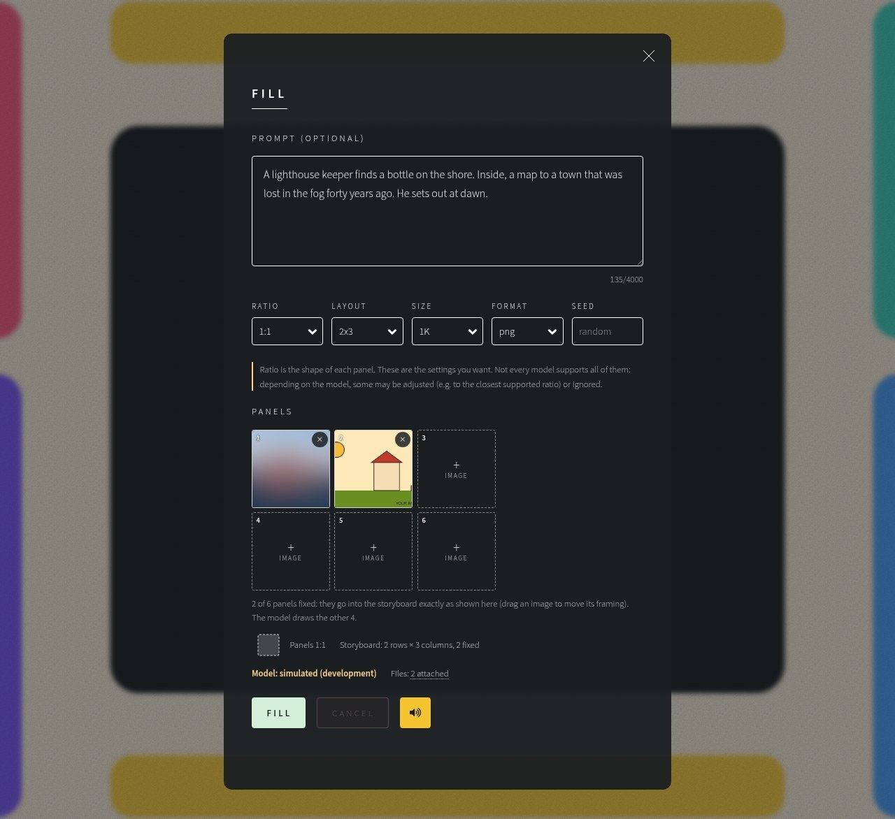
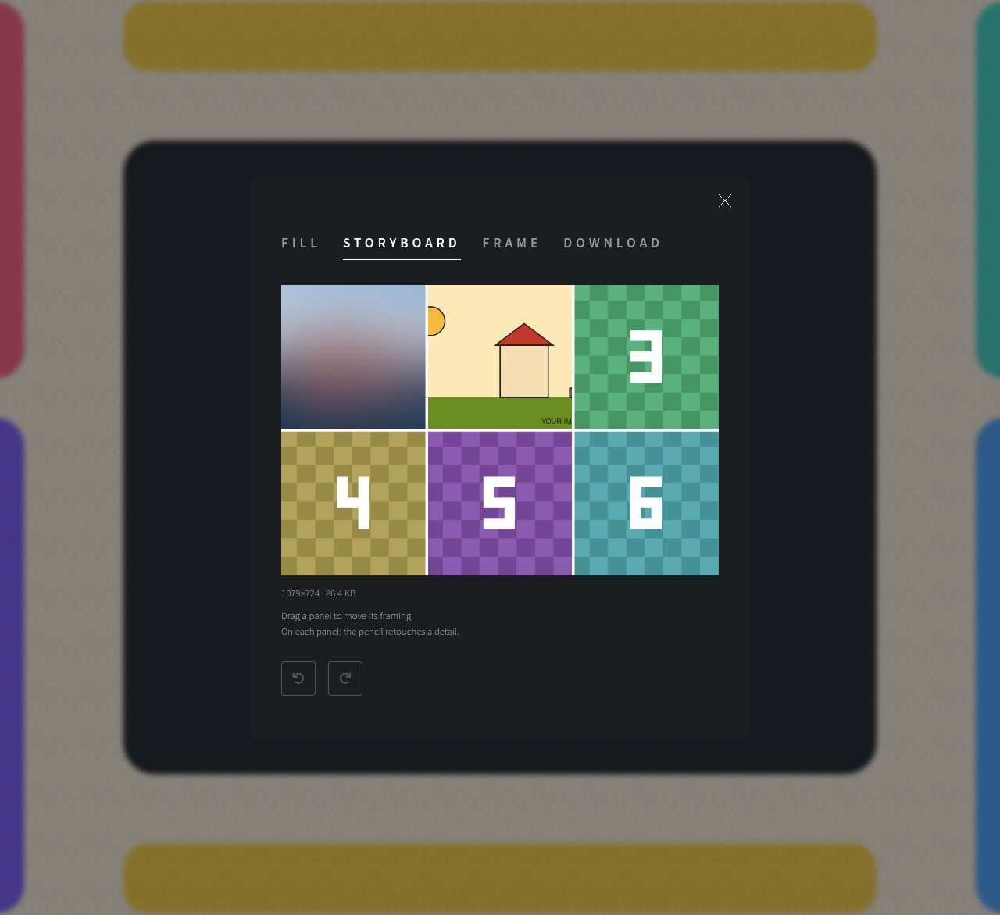
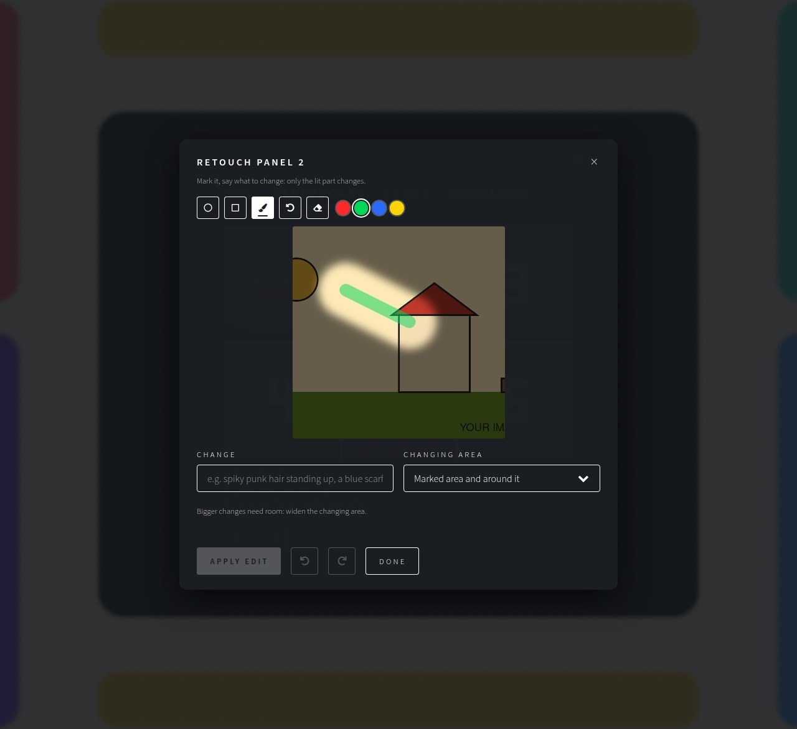
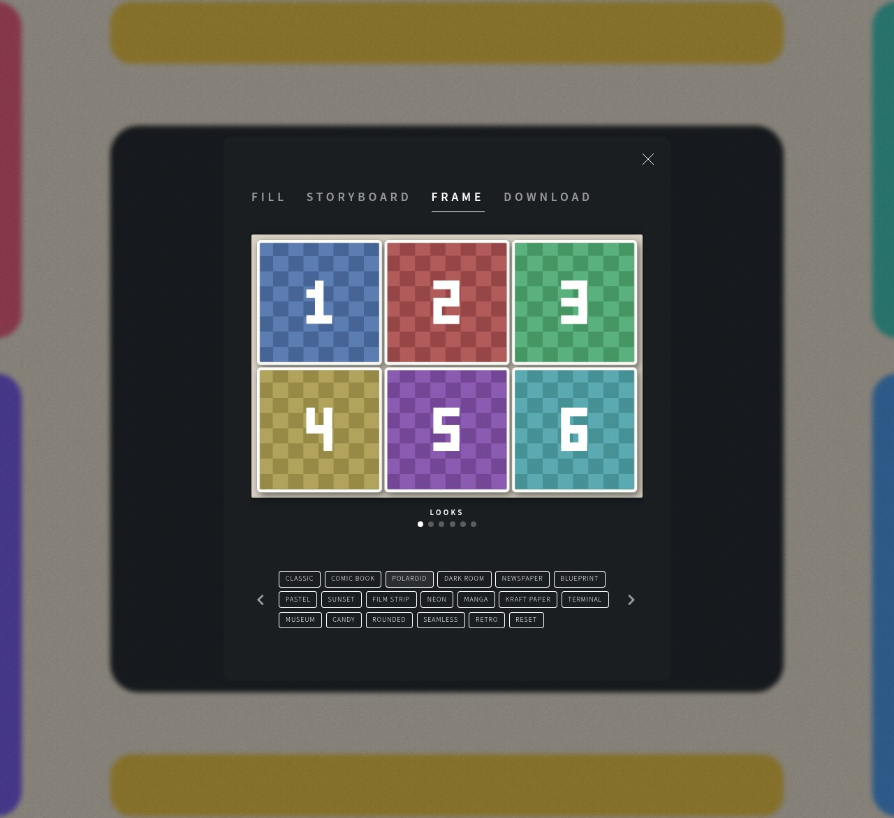
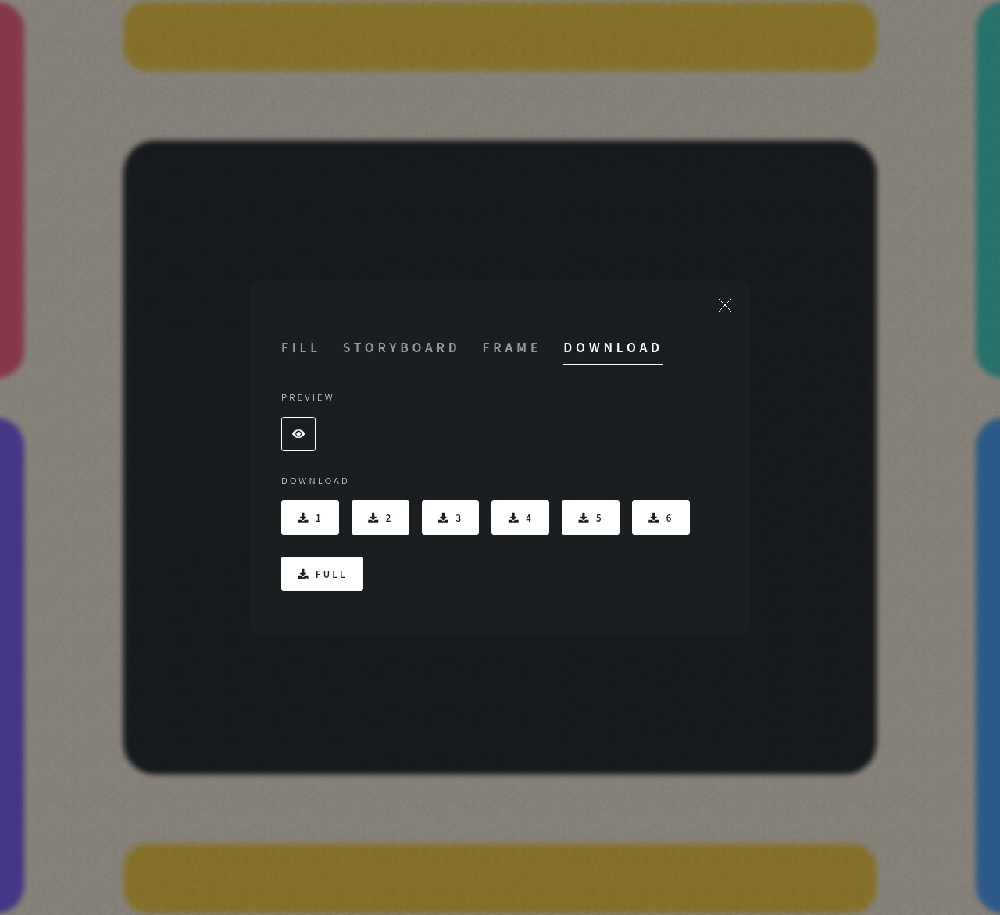

Turn a few images into a complete storyboard.
Bring your own key and create stories!
flowchart TD
A(["🌐 Open the site"]):::edge --> B["🔑 Model: provider + your key"]:::user
B --> C["📎 Files: notes and images (optional)"]:::user
C --> D["🧩 Fill: layout · ratio · your panels · story"]:::user
D --> P["🤖 Model draws the empty panels"]:::ai
P --> E["🎞️ Storyboard: one image, all panels"]:::edge
E -- "drag a panel" --> E
E -- "pencil" --> F["✏️ Retouch one panel"]:::info
F -- "undo · redo · again" --> F
F --> E
E -- "Frame tab" --> G["🖼️ Frame: style the whole board"]:::info
G --> E
E -- "Download tab" --> H["⬇️ Download panels or full board · share notice first"]:::user
H --> I(["👋 Leave"]):::edge
E -. "new idea" .-> D
classDef edge fill:#ffffff,stroke:#ffffff,color:#1b1f22
classDef user fill:#213328,stroke:#b5e8bf,color:#ffffff
classDef ai fill:#3a3121,stroke:#ffd48a,color:#ffffff
classDef info fill:#1f2d3d,stroke:#8fc7ff,color:#ffffff
sequenceDiagram autonumber participant B as 🌐 Your browser participant S as 🖥️ Server (memory only) participant P as 🤖 Image model Note over B: 🧭 plans layout and ratio
🧱 builds the guide: your panels + numbered gaps B->>S: 🧩 Fill: guide, files, story (one request) S->>S: 🛡️ check key, limits, files S->>P: 📡 forward request P-->>S: 🎨 one PNG S-->>B: 🖼️ done · image ready Note over B: ✂️ cuts the panels, fits your images, frames the board B->>S: ✏️ Retouch: one panel + your marks + reach S->>P: 📡 forward panel and marked copy P-->>S: 🎨 one PNG S-->>B: 🖼️ image Note over B: 🎭 blends only the change into that panel




